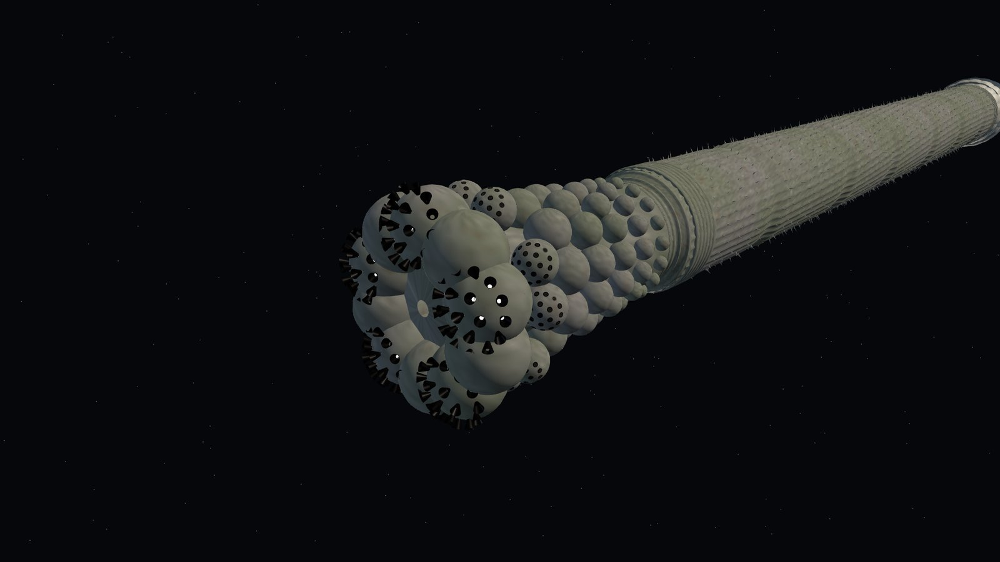
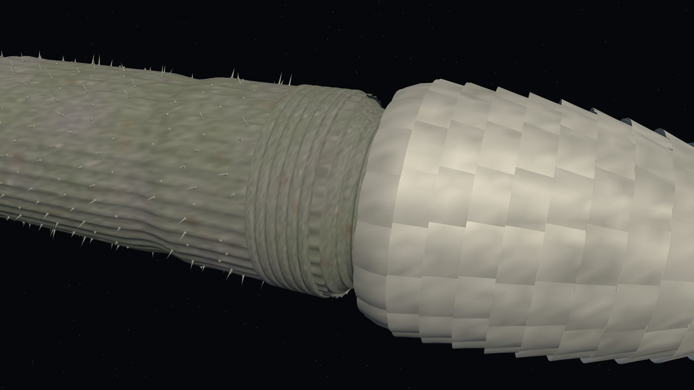
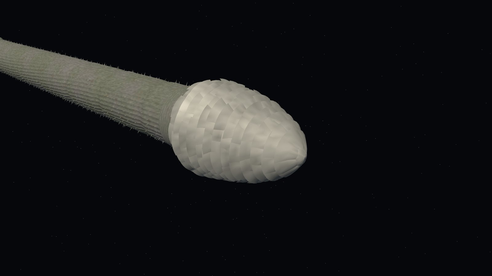
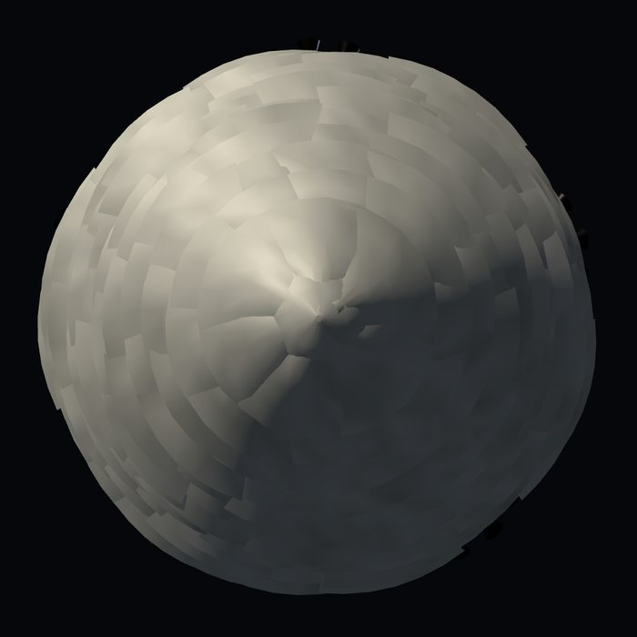
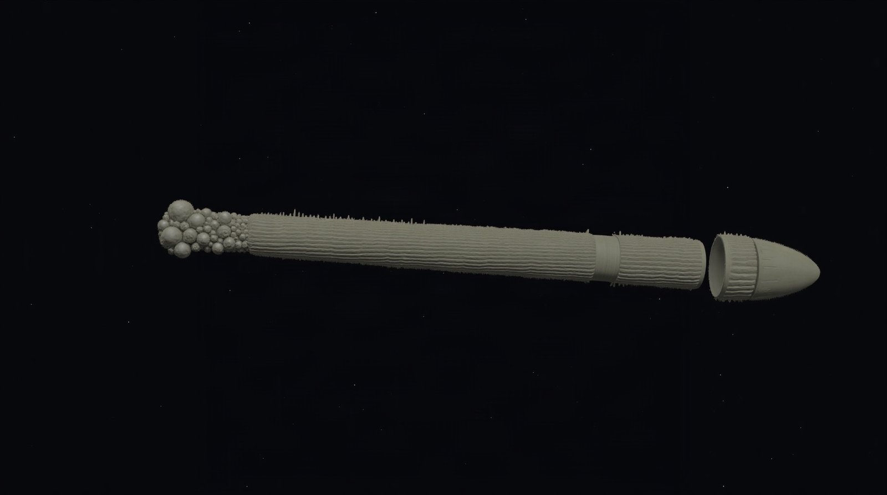
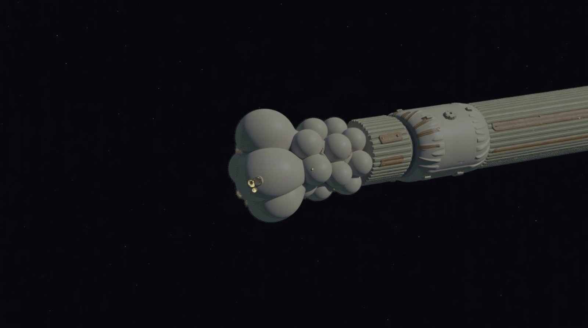
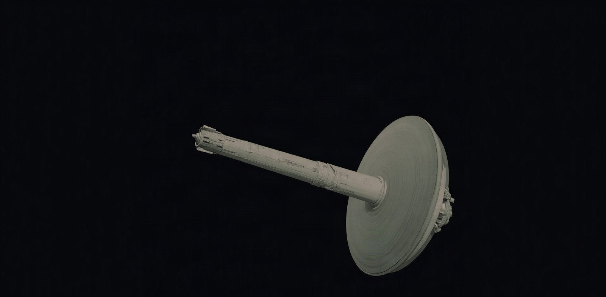
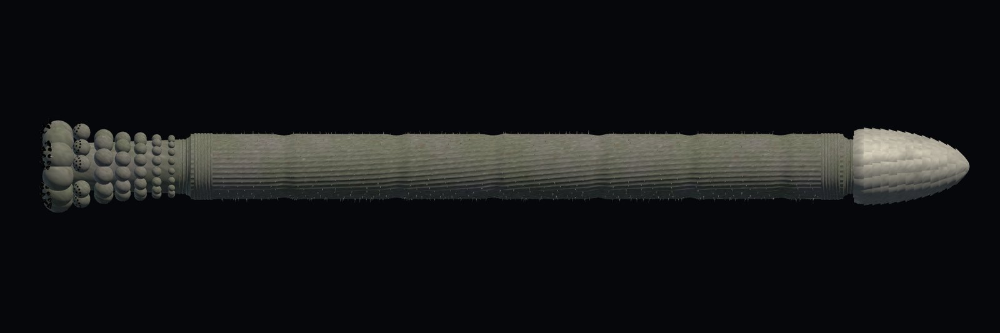
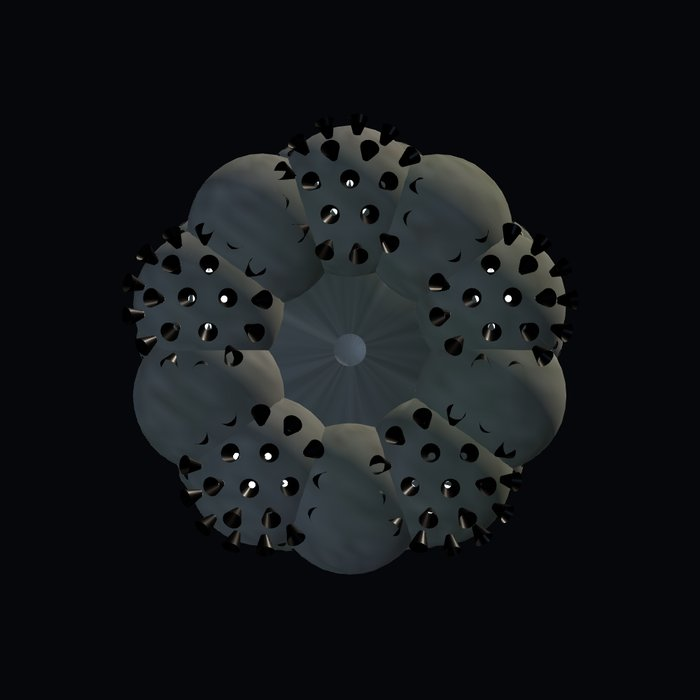

指1本で回転、2本でズームと移動。全長は約109 km（居住区円筒77 km、直径約7.6 km）。船尾の稼働中推進器は、内部で核融合パルスが光ります。




接続部・推進器・質感を変更する前の3Dモデルから作った画像です。





| 項目 | 値 | 区分 |
|---|---|---|
| 居住区円筒 | 内径7.0 km、長さ77.0 km | 既定 |
| 中心軸 | 直径約200 m、非回転 | 既定 |
| 巡航時シールド径 | 円筒径の120%（展開時150%） | 既定 |
| 減速時シールド径 | 円筒径の6倍（既定は5〜7倍） | 仮 |
| 稼働中の推進器 | 円錐形100基。大型コブ10個のうち1つおきの5個に20基ずつ（中心1＋環6＋環13） | 既定（配置は仮） |
| 建造中・解体中の推進器 | 穴のみ。各100個。稼働中コブの前方に小さめのコブを2個ずつ（建造中・解体中）置き、1個に20穴 | ご指示の解釈（仮） |
| 質感 | 側面：灰緑のスケイル／シールド：やや白銀のざらついた面／推進器：漆黒の重金属、内部に核融合パルスの発光 | 既定 |
| 接続部の構造帯 | 溝つきの帯（長さ2.6 km）＋継ぎ目＋首（外殻径の84%） | 仮 |
| 展開時の装甲葉 | 並びはランダム。前方投影で隙間なし（計算で確認） | 既定 |
| 外殻の厚さ | 300 m（外径約7.6 km） | 仮 |
| シールドの長さ | 14 km | 仮 |
| 船尾推進区画の長さ | 16 km | 仮 |
| 回転部と非回転部の隙間 | 0.8 km | 仮 |
| くびれ・節 | 6か所、不規則な間隔 | 仮 |
| ヒダ | 40本、ゆるいねじれ | 仮 |
| 減速時の推進器 | 船首シールド前面に推進コブ群を移設 | 仮（移設先の位置） |